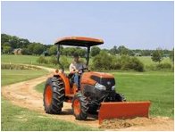
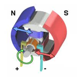

FMP 211 :: Lecture 01 :: FARM POWER IN INDIA - HUMAN, ANIMAL, MECHANICAL AND ELECTRICAL ENERGY SOURCES AND THEIR USE IN AGRICULTURE

Farm Power is an essential input in agriculture for timely field operations for increasing production and productivity of land. Farm power is used for operating different types of machinery like tillage, planting, plant protection, harvesting and threshing machinery and other stationary jobs like operating irrigation equipment, threshers/ shellers / cleaners/ graders, etc.
SOURCES OF FARM POWER
There are different sources of farm power available in India which are classified as
- Human power
- Animal power
- Mechanical power (Tractors + Power tillers + Oil engines)
- Electrical power
- Renewable energy (Biogas + Solar energy + Wind energy)
HUMAN POWER
Human power is the main source for operating small implements and tools at the farm. Stationary work like chaff cutting, lifting, water, threshing, winnowing etc are also done by manual labour. An average man can develop maximum power of about 0.1 hp for doing farm work.
 |
||
| Paddy Nursery collection | Nursery transport | Paddy transplanting |
| weeding | weeding | Winnowing |
ANIMAL POWER
Power developed by an average pair of bullocks about 1 hp for usual farm work. Bullocks are employed for all types farm work in all seasons. Besides bullocks, other animals like camels, buffaloes, horses, donkeys, mules and elephants are also used at some places. The average force a draft animal can exert is nearly one-tenth of its body weight.
 |
|||
| Ploughing a land | Ploughing a land | Bullock cart | Persian wheel- water lifting |
MECHANICAL POWER
Broadly speaking, mechanical power includes stationary oil engines, tractors , power tillers and self propelled combines. Internal combustion engine is a good device for converting liquid fuel into useful work(mechanical work). These engines are two types
- Spark ignition engines (Petrol or Kerosene engine)
- Compression ignition engines (Diesel engines)
The thermal efficiency of diesel engine varies from 32 to 38 per cent whereas that of petrol engine varies from 25 to 32 per cent.
In modern days, almost all the tractors and power tillers are operated by diesel engines. Diesel engines are used for operating irrigation pumps, flour mills, oil ghanis, cotton gins, chaff cutter, sugarcane crusher, threshers, winnowers etc.
| Two stroke engine | Two stroke engine ( SI engine) | Eighteen cylinder two stroke engine | Four stroke Engine + Pump |
| Thresher Thresher | |||
 |
|||
| Different types of tractors | |||
|  | |||
| Tractor with dozer blade | Power tiller | Power tillers | |
ELECTRICAL POWER
Electrical power is used mostly in the form of electrical motors on the farms. Motor is a very useful machine for farmers. It is clean, quest and smooth running. Its maintenance and operation needs less attention and care. The operating cost remains almost constant throughout its life. Electrical power is used for water pumping, diary industry, cold storage, farm product processing, fruit industry and many similar things.
|  | |||
| Electric motors | Electric motors | ||
 |
 |
||
| Electric motor + pump Chaff cutter | Chaff cutter – motor driven | ||
RENEWABLE ENERGY
It is the energy mainly obtained from renewable sources of energy like sun, wind, biomass etc. Biogas energy, wind energy and solar energy are used in agriculture and domestic purposes with suitable devices. Renewable energy can be used for lighting, cooking, water heating, space heating, water distillation, food processing, water pumping, and electric generation. This type of energy is inexhaustible in nature.
| Different applications of solar energy | ||
| Solar electric panel Solar electric panel | Grid connected solar energy | |
| Wind Farms | ||
| Biogas plants | ||
Usage of renewable energy sources
Solar energy- Solar dryers, lantern, cooker, solar still, solar refrigeration, solar lighting etc
Wind energy- Water pumping, electricity generation etc.
Biomass energy- Gasifiers to produce producer gas, pyrolysis to produce liquid fuels, Biogas etc
Tidal energy – electricity generation
Geothermal energy- Heat and electricity production
MERITS AND DEMERITS DIFFERENT FARM POWER SOUECES
| Merit | Demerit |
||
Human Power |
|||
1. |
Easily available. |
1. |
Costliest power compared to all other forms of power. |
2. |
Used for all types of work. |
2. |
Very low efficiency. |
|
|
3. |
Requires full maintenance when not in use. |
|
|
4. |
Affected by weather condition and seasons. |
Animal Power |
|||
1. |
Easily available. |
1. |
Not very efficient. |
2. |
Used for all types of work. |
2. |
Seasons and weather affect the efficiency. |
3. |
Low initial investment. |
3. |
Cannot work at a stretch. |
4. |
Supplies manures to the field and fuels to farmers. |
4. |
Requires full maintenance when not in use. |
5. |
Lives on farm products. |
5. |
Creates unhealthy and dirty atmosphere near the residence. |
|
|
6. |
Very slow in doing work. |
Mechanical Power |
|||
1. |
Efficiency is high. |
1. |
Initial capital investment high. |
2. |
Not affected by weather. |
2. |
Fuel is costly. |
3. |
Cannot run at a stretch. |
3. |
Repairs and maintenance needs technical knowledge. |
4. |
Requires less space. |
|
|
5. |
Cheaper form of power. |
|
|
Electrical Power |
|||
1. |
Very cheap form of power. |
1. |
Initial capital investment high. |
2. |
High efficiency. |
2. |
Requires good amount of technical knowledge. |
3. |
Can work at a stretch. |
3. |
If handled carelessly, it causes great danger. |
4. |
Maintenance and operating cost is very low. |
|
|
5. |
Not affected by seasons. |
|
|
Concept of Farm Mechanization
The main concept of farm mechanization is to apply the principles of engineering and technology to do the agricultural operations in a better way to increase crop yield. This includes the development, application and management of all mechanical aids for field operation, water control, material handling, storage and processing. Mechanical aids include hand tools, animal drawn implements, power tillers, tractors, engines, electric motors, grain processing and hauling equipments.
SCOPE OF FARM MECHANIZATION
Improved irrigation facilities, introduction of high yielding varieties. use of higher doses of fertilizers and pesticides have increased the scope for greater farm mechanization Farm mechanization helps for proper utilization of basic inputs like water, seed and fertilizer, optimum placement of the seed and fertilizer, ploughing, removal of weeds, leveling of uneven land and land reclamation. If machines are used farmer and his animals are relieved of hard work. With the support of machines farmer can do his job better and quicker. He will get more leisure and devote his time to other works. He can earn better living.
BENEFITS OF FARM MECHANIZATION
- Timeliness of operation
- Precision of operation
- Improvement of work environment.
- Enhancement of safety
- Reduction of drudgery of labour
- Reduction of loss of crops and food products
- Increased productivity of land
- Increased economic return to farmer
- Improved dignity of farmer
- Progress and prosperity in rural areas
CONSTRAINTS IN FARM MECHANISATION (LIMITING FACTORS IN FARM MECHANIZATION)
- Small land holdings
- Less investing capacity of farmers
- Adequate availability of draft animals
- Lack of suitable farm machine for different operations
- Lack of repair and servicing facilities for machines
- Lack of trained man power
- Lack of coordination between research organization and manufacturer
- High cost of machines
- Inadequate quality control of machine
QUESTIONS
- The cheapest source of energy is ------------------------
- Power available from a farm labour is -------------------hp
- Solar energy is a ------------------------------ energy
- State the merits and demerits of different sources of energy used in farm
| Download this lecture as PDF here |